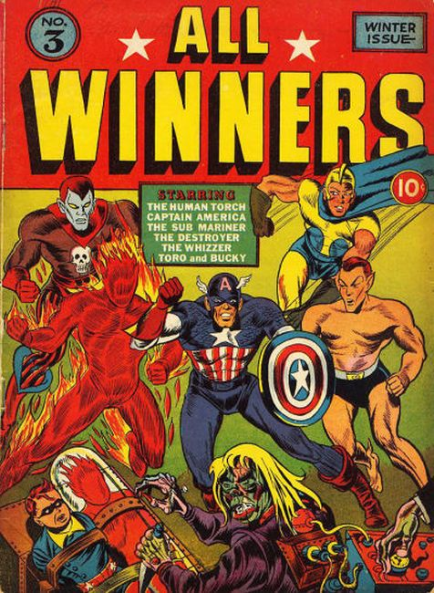

All Winners

- The Case of the Black Dragon Society; After the mysterious suicide of a agent of the Black Dragon Society, who has just killed the owner of many oil wells, the Human Torch and Toro head east to see the owner of one of those wells, discovering the Japanese plan to blow up its pipeline.
- The Canvas of Doom!, script by Stan Lee, art by Al Avison; Cap and Bucky come face to face with a lunatic artist, who paints portraits of his victims in the act or throes of death, then invites them to view the canvas, which hypnotizes them into doing away with themselves.
- Terror Prison starring the Whizzer, script by Stan Lee, pencils by Mike Sekowsky.
- Jungle Drums text story.
- The Ship of Horrors starring The Sub-Mariner, script and art by Bill Everett.
- Ad for Young Allies Comics #2.
- The Secret Tunnel of Death! starring The Destroyer.